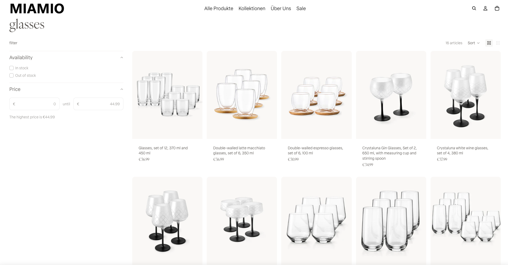
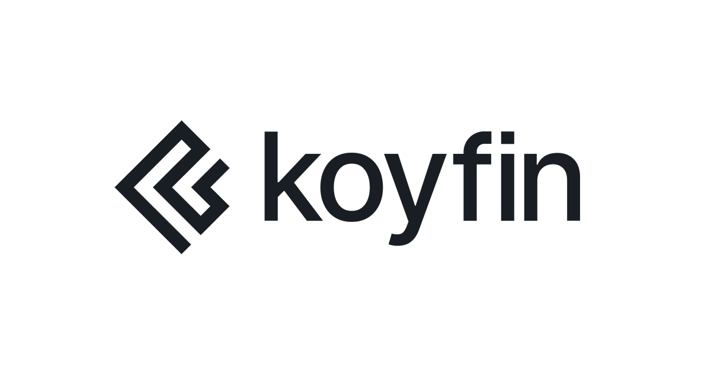
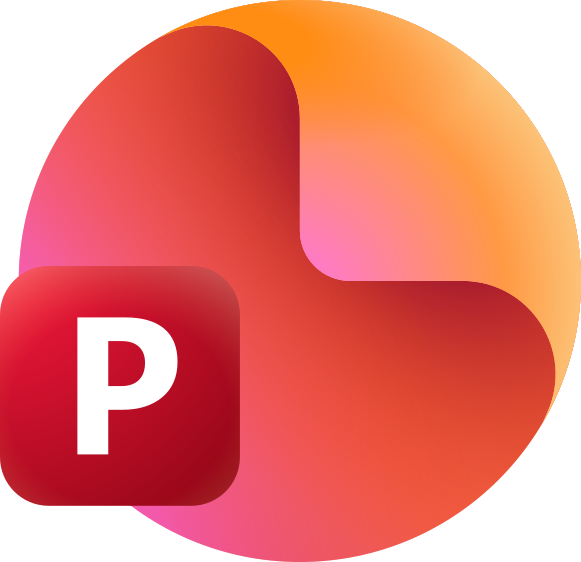

Abhinav Kumar
Competitive Insights | Business Intelligence | Go to Market | Power BI, SQL, AI Automation
Market intelligence and strategy professional with two years at STMicroelectronics, turning competitor, customer and macro data into pricing, go to market and portfolio decisions. ESCP MiM. Based in Munich, open to roles in Germany, the Netherlands and Austria.
Based in Munich, available immediately, open to relocation across Germany, the Netherlands and Austria.
“Abhinav delivered outstanding work in market intelligence and IoT business development, structured, thorough, and always exceeding expectations. I personally advocated to retain him, the decision was purely operational, not a reflection of his performance.”
Here is the work behind that endorsement.
Strategic projects, built to deliver results
Hover over a project to preview it up close. Click to see the full story, the tools used, and the dashboards behind it.
Earlier work at Sayano Deutschland

E-Commerce Webpage Optimization
Data backed analysis that raised conversion rates 12 percent across 8 product launches and grew website traffic 155 percent.
See the full case study →
Portfolio Diversification via Geopolitical Arbitrage
A strategic pivot into glassware that contributed to 33 percent annual revenue growth, backed by sharp analysis of costs and competition.
See the full case study →That is the work. Here is the path that built it.
The path so far
- STMicroelectronics Strategic Marketing Associate, a fixed term role in market intelligence and strategy.
- BSH Hausgeräte Internship in marketing and sales.
- Sayano Deutschland Internship in marketing and sales.
- ESCP Business School Master in Management (MiM).
- JSW Steel Marketing Manager, India's largest steel producer by market cap.
- Birsa Institute of Technology Chemical Engineering.
- Value Your Scrap (2014) Co-founded this waste management startup while still in college.
That is the career path. Here is the fuller story behind it.
From a small town to global strategy rooms
- Chemical Engineer who moved into a strategic intelligence role
- Master in Management (MiM) from ESCP Business School, ranked 7th globally and 5th in Europe (FT 2025)
- Builds and extracts market intelligence, then turns it into data-driven strategy
- Builds AI automated data pipelines with n8n, and is now focusing on earning an SAP Technology Consultant certification
- Experience across five countries, based in Munich, Germany
I am a Chemical Engineer who moved into market intelligence and strategy, spending two years at STMicroelectronics turning competitor, customer and macro data into pricing, go to market and portfolio decisions. I hold a Master in Management from ESCP Business School and have built hands on experience across five countries. My path started by co-founding a waste management startup while still in college, then leading marketing at JSW Steel, before the internships and roles in Germany that shaped the structured, data led way I work today.
Read my full story
My story starts in Dhanbad, the coal capital of India, where I grew up before studying Chemical Engineering at the Birsa Institute of Technology in nearby Sindri. In 2014, while still in college, I co-founded Value Your Scrap, a startup in the waste management sector. That early experience is where I first learned how to turn a rough idea into a working business, a lesson that still shapes how I approach every project today.
That instinct for building something from scratch led me to my first real job, Marketing Manager at JSW Steel, India's largest steel producer by market cap. It was there that I sensed I needed more structured learning, and that is what motivated me to join ESCP Business School, a top business school here in Europe. During my coursework, I picked up internships in marketing and sales at Sayano Deutschland and BSH Hausgeräte in Germany, building hands on experience across five countries, India, Germany, France, Spain, and Russia.
That international grounding carried me into a Strategic Marketing Associate role at STMicroelectronics, until my contract came to an end, as the role was structured on a fixed term basis. There, I took part in a range of strategic projects, starting with building a market intelligence dashboard, then leading the go to market strategy project for the Humanoid Robotics segment, and taking part in Annual Budgetary Planning sessions to support the corporate strategy team. Along the way, I picked up hands on experience with tools like Power BI, Tableau, Alteryx, Adverity, Salesforce, SAP, the n8n automation tool, and Claude Code, skills that now sit at the center of how I work.
These experiences shaped a clear set of skills. Here is what I bring to the table.
Three pillars behind every project
Every project I take on moves through the same three stages. First, understanding what the market is really telling you. Then, shaping that insight into a strategic plan. Finally, proving that the plan delivered results. The three pillars below show how I work through each stage, from raw data to a decision leadership can act on.
Those three pillars run on a concrete toolkit. Here is what I actually use to get the work done.
What I work with, day to day
Grouped by what each tool is actually for, from pulling raw data to telling the story that comes out of it.
Data, Analytics & BI

Koyfin SQL
SQL Python
Python
PowerPointAutomation & AI
 n8n
n8n Claude Code
Claude CodeEnterprise Platforms
Also used: Adverity, BigQuery, SAP, Google Ads, Canva, Figma, Microsoft Office, SharePoint, Google Workspace, Miro, Asana, Jira, Confluence, and Trello.
That is the toolkit behind the work. Here is what colleagues and leaders say about it.
What colleagues and leaders say
Seven people I have worked closely with share their view of how I work.
"Abhinav delivered outstanding work in market intelligence and IoT business development, structured, thorough, and always exceeding expectations. I personally advocated to retain him, the decision was purely operational, not a reflection of his performance. He has my fullest endorsement."
"Abhinav was a pleasure to work with, goal oriented, highly dedicated, and someone with real integrity. What stood out was his independence and conscientiousness, he never had to be followed up with twice. Strong team spirit too. Losing him was genuinely tough. I would work with him again without hesitation."
"Abhinav brought a real contribution to our strategic thinking. His market intelligence work was precise, insightful, and always delivered with maturity beyond his level. He has the analytical mind and the know how to excel wherever he goes next."
More testimonials
"A high performance talent who translates market intelligence into measurable success. Abhinav demonstrated full ownership of the product lifecycle, from SEO to Power BI analytics, consistently delivering outstanding results. His strategic mindset and leadership potential are exemplary."
"A rare talent who bridges the gap between strategic thinking and flawless execution. Abhinav took full ownership of international sales projects, transforming complex data into management level insights with remarkable clarity. His proactive curiosity and collaborative leadership make him a high potential asset."
"Abhinav is a reliable, high potential talent with a natural gift for communication. His strong motivation, active presence, and commitment to delivering on his promises make him a standout asset. He truly excels in environments that require both strategic clarity and a proactive drive to succeed."
"Abhinav is a natural collaborator who consistently steps up beyond his core role. He delivers high quality results even under tight deadlines, showing a rare level of dedication and follow through. His proactive drive to support cross functional initiatives makes him a truly valued member of the team."
Ready to start a conversation? Here is how to reach me.